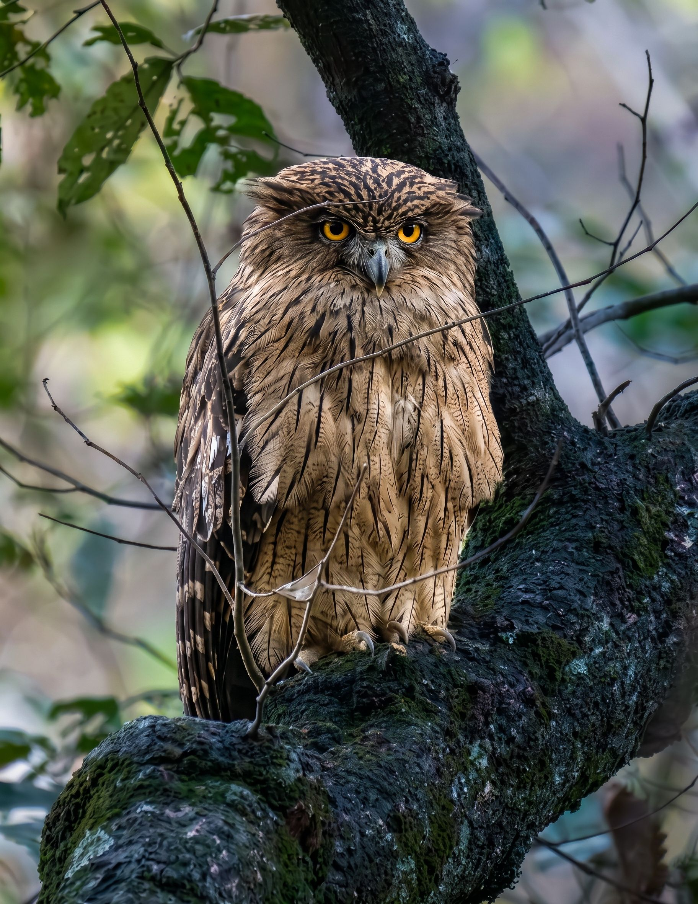

Browse Birds
- Alexandrine Parakeet
- American Goldfinch
- American Robin
- Ashy Drongo
- Ashy Prinia
- Asian Brown Flycatcher
- Asian Fairy-bluebird
- Asian Koel
- Asian-Green Bee-eater
- Australian Brush-turkey
- Australian Darter
- Australian Golden Whistler
- Australian Ibis
- Australian King-Parrot
- Australian Magpie
- Australian Pelican
- Australian Raven
- Australian Wood Duck
- Azure-winged Magpie
- Baltimore Oriole
- Barn Owl
- Bay-Backed Shrike
- Black Bulbul
- Black Drongo
- Black Kite
- Black Redstart
- Black Swan
- Black-breasted Weaver
- Black-Crowned Night Heron
- Black-faced Cuckooshrike
- Black-Headed Ibis
- Black-Hooded Oriole
- Black-naped Monarch
- Black-Naped Oriole
- Black-Rumped Flameback
- Black-Winged Kite
- Black-winged Stilt
- Blue Jay
- Blue-eared Kingfisher
- Blue-faced Honeyeater
- Blue-Tailed Bee-Eater
- Blue-throated Bee-eater
- Brahminy Kite
- Brahminy Starling
- Brolga
- Brown Fish Owl
- Brown Pelican
- Brown Rock Chat
- Brown-Headed Barbet
- Budgerigar
- Cattle Egret
- Cedar Waxwing
- Chestnut-bellied Sandgrouse
- Cockatiel
- Common Chaffinch
- Common Hawk-Cuckoo
- Common Hoopoe
- Common Iora
- Common Kestrel
- Common Kingfisher
- Common Myna
- Common Nightingale
- Common Rosefinch
- Common Sandpiper
- Common Stonechat
- Common Tailorbird
- Coppersmith Barbet
- Crested Bunting
- Crested Pigeon
- Crested Serpent Eagle
- Crimson Rosella
- Crimson Sunbird
- Eastern Rosella
- Eastern Spinebill
- Eastern Yellow Robin
- Emu
- Eurasian Coot
- Eurasian Jay
- Eurasian Magpie
- European Bee-eater
- European Goldfinch
- European Greenfinch
- European Robin
- European Roller
- European Serin
- European Stonechat
- Galah
- Golden Eagle
- Golden Pheasant
- Golden-Fronted Leafbird
- Great Hornbill
- Great Spotted Woodpecker
- Greater Coucal
- Greater Flamingo
- Greater Racket-Tailed Drongo
- Grey Butcherbird
- Grey Francolin
- Grey Heron
- Grey-Breasted Prinia
- Grey-Headed Fish Eagle
- Griffon Vulture
- Himalayan Monal
- House Crow
- House Sparrow
- Indian Bush Lark
- Indian Cormorant
- Indian Courser
- Indian Golden Oriole
- Indian Grey Hornbill
- Indian Openbill
- Indian Paradise Flycatcher
- Indian Peafowl
- Indian Pied Starling
- Indian Pitta
- Indian Pond Heron
- Indian Robin
- Indian Roller
- Indian Silverbill
- Indian Spot-billed Duck
- Indian Thick-knee
- Italian Sparrow
- Jungle Babbler
- Jungle Owlet
- Laughing Dove
- Laughing Kookaburra
- Lesser Adjutant
- Lesser Whistling Duck
- Little Cormorant
- Little Egret
- Little Grebe
- Little Ringed Plover
- Long-Tailed Shrike
- Magpie-lark
- Malabar Pied Hornbill
- Malabar Whistling Thrush
- Masked Lapwing
- Noisy Miner
- Northern Cardinal
- Northern Hawk-Owl
- Northern Lapwing
- Orange-headed Thrush
- Oriental Darter
- Oriental Magpie-Robin
- Oriental Skylark
- Oriental Turtle Dove
- Oriental White-Eye
- Pacific Black Duck
- Painted Stork
- Pied Bushchat
- Pied Cuckoo
- Pied Currawong
- Pied Kingfisher
- Pied Oystercatcher
- Plain Prinia
- Puff-Throated Babbler
- Purple Heron
- Purple Sunbird
- Purple-Rumped Sunbird
- Rainbow Lorikeet
- Red Wattlebird
- Red-browed Finch
- Red-legged Partridge
- Red-Naped Ibis
- Red-Vented Bulbul
- Red-Wattled Lapwing
- Red-Whiskered Bulbul
- Red-winged Blackbird
- Rose-breasted Grosbeak
- Rose-Ringed Parakeet
- Rufous Treepie
- Sand Martin
- Sardinian Warbler
- Sarus Crane
- Scaly-Breasted Munia
- Scarlet Tanager
- Secretarybird
- Shikra
- Silver Gull
- Small Minivet
- Southern Cassowary
- Spotted Dove
- Spotted Owlet
- Stork-Billed Kingfisher
- Sulphur-crested Cockatoo
- Superb Fairywren
- Superb Lyrebird
- Tawny Frogmouth
- Wedge-tailed Eagle
- Welcome Swallow
- White Stork
- White-bellied Drongo
- White-Bellied Sea-Eagle
- White-Breasted Waterhen
- White-Browed Fantail
- White-Browed Wagtail
- White-Rumped Munia
- White-Throated Kingfisher
- Willie Wagtail
- Woolly-Necked Stork
- Yellow-Footed Green Pigeon
Bird of the Day
Brown Fish Owl

Featured Bird
European Roller